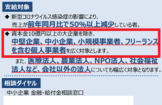

アフィ運営も200万円の持続化給付金は貰えるのか？
新型コロナウイルス感染拡大による影響のため、法人で200万円、個人事業者で100万円の持続化給付金が予定されています。
この持続化給付金についてですが、果たしてアフィリエイターも対象になるのでしょうか？
経済産業省の持続化給付金のPDFによると、「中堅企業、中小企業、小規模事業者、フリーランスを含む個人事業者を広く対象とします。」とあるため、この文言だけを見るとアフィサイト運営者も対象になると感じています。

必要な書類を見てみますと、法人も個人事業主も「2019年の確定申告書類の控え」が必要とのことで、いずれも確定申告をしていることが条件になるようです。
また、もう一つの条件として、「2020年1月から2020年12月」のうち、前年同月比で売上が50％以上減少した月があることが必要とのことです。飲食店では営業を自粛しているケースもあるかと思いますが、お店を休業した場合でもこの条件を満たせるようです。
例えば、2019年のアフィリエイト報酬が月80万ペースでその事業年度の売上が960万だったとします。
この状況で、2020年の7月に月間40万円にまで半減してしまった場合、960万－480万で480万の給付金になる計算ですが、法人なら上限が200万となるため、給付金は200万の計算になります。
ただし、仮に個人事業主で月5万円、年間60万円の状態で月2万円に半減したような場合、60-24で36万円の計算になりますので、必ずしも200万円、100万円を貰えるわけではなく、2019年中にある程度のアフィリエイト収入が発生していたことが条件になります。
非常に気になる点は「新型コロナウイルス感染症の影響により、」という条件ですが、この点も厳密に証明する必要があるのかは現時点では不明です。
飲食店の場合は感染拡大防止の観点から、営業を自粛して売上が半減しても問題ありませんが、自宅で作業をしているアフィリエイターがサイトの更新を自粛して売上が半減したとしても、ブログ執筆のための取材活動を自粛したなどのケースでない限り、新型コロナとの因果関係を証明するのは難しいかもしれません。
けれども、今後は新型コロナの影響で企業業績の低下が予測されており、本来なら決算期に伸びるはずだった広告出稿が抑えられてしまい、入札広告の場合は広告単価の減少で収益が激減してしまう可能性があります。
また、成果報酬アフィリエイトについても、広告出稿が停止になったり、あるいは広告単価が引き下げられてしまう可能性がありますが、このあたりで新型コロナウイルスによる影響を主張する形になるかと思います。
概ね、当サイト運営者はアフィサイト運営の場合でも持続化給付金の対象になると考えておりますが、もしネックになる点があるとすれば、新型コロナウイルス感染症の影響をどう証明するのか、あるいはそもそも証明する必要があるのかという点にあるかと思います。
現在出ている条件を見た感じでは、必要な情報は確定申告書類の控えと帳簿となっているため、そこまでの必要はない気もしますが、現時点では不明です。
いずれにしましても、まだ詳細は出てきていない為、今後も経産省などのホームページで最新情報をチェックしていくとよいでしょう。
【追記：】
日本郵政は新型コロナとは関係のない不正問題で営業を自粛していましたが、社員120人が持続化給付金を申請したため、取り下げや返還の要請をしたとのことです。けれども、約10人が取り下げや返還に応じていないとのことです。
この点から見れば、やはり新型コロナの影響がない場合は申請できません。
けれども、サイト運営の場合は日本郵政のような新型コロナとは全く関係のない売上減ではないため、新型コロナの影響がないとは限りません。謎は深まるばかりですが、今後も当ブログにて情報収集していく予定です。